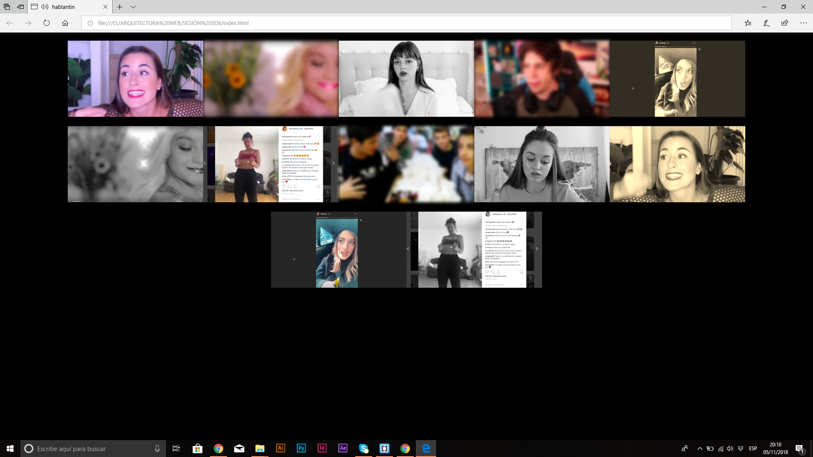

Toda obra nace de un concepto. Durante las primeras clases de Arquitectura web, antes de adentrarnos a fondo en crear código, comenzamos un proceso de investigación, a través del cual extraeríamos la información necesaria para tener ese núcleo firme que toda creación necesita.
Las redes sociales fue el tema que, desde un principio, despertó nuestra atención. Somos personas que hemos crecido con ellas, forman parte de nuestro día a día y conocemos a fondo su funcionamiento, pero nunca nos habíamos parado a pensar y reflexionar sobre el uso que hacemos de estas y la forma en la que afectan a nuestras vidas.
Internet nos ofrece algo que otros medios no lo hacen, poder opinar. La capacidad de internet y de las redes que nos permite alcanzar una plena libertad de expresión, nos hace ser dependientes de ellas. Nos convertimos en “dioses”, que pueden acceder al contenido que desean en cualquier momento y lugar, y a la vez, mostrar al resto del mundo lo que sea de tu interés. En las redes tomamos en control total. Tenemos el poder de mostrarnos como siempre hemos querido ser y no como de verdad somos. Esto conduce a los usuarios a un fetichismo por el lujo, la salud, el placer, la libertad… que en realidad, en nuestra vida cotidiana, no gozamos. A día de hoy, donde nos vemos verdaderamente reflejados es en nuestros actos de navegación, y no en nuestros perfiles sociales. Por ello, se podría decir que es lo poco que no publicamos aquello que en realidad nos define.
En conclusión, podemos ver como las redes se han convertido en una especie de teatro en el que todos estamos obligados a entretener, alejando a las personas que hay tras las pantallas de su verdadero ser y creando avatares estereotipados cuyo objetivo es conseguir un efímero minuto de fama. De aquí nace el concepto de hablantín en relación con las redes.
Tal y como dice la propia palabra, el hablantín es aquel que habla mucho. Eso fue lo que nos inspiró en nuestro primer proyecto. A modo de crítica al usuario de las redes sociales, el hablantín era un gran concepto. Las personas utilizan sus perfiles sociales en internet para hablar, para opinar sobre temas de actualidad, o simplemente para comentar su día a día. En la gran mayoría de los casos con información estéril que simplemente trata de llamar la atención.
El proyecto, que utilizaba un formato de 32 bits, se puede dividir en dos segmentos: el audio y el vídeo. Así es como nos distribuimos en clase. Los encargados del sonido, descargaron audios desde YouTube, los cuales fueron introducidos a un patch, en PureData, que se encargaba de reproducirlos aleatoriamente según la intensidad de sonido que recogía el ordenador. Mientras, los encargados del apartado visual, descargaban vídeos, también de YouTube, a los cuales se les incrustaría el audio, previamente tratado con PureData, utilizando Adobe Premier.
Una vez exportados los vídeos, utilizamos un patch en Brackets que los reproducía simultáneamente, repitiendo el patrón que puedes ver en la imagen.
Tras llevar a cabo este primer objetivo, finalizando exitosamente el primer pequeño proyecto, la nueva tarea era trasladar nuestros conocimientos a un formato de 64 bits. La meta, en esta ocasión, es incluir aquello que nuestro Hablantín no ofrecía al usuario: la interacción a tiempo real.